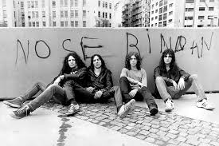
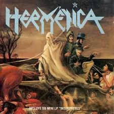
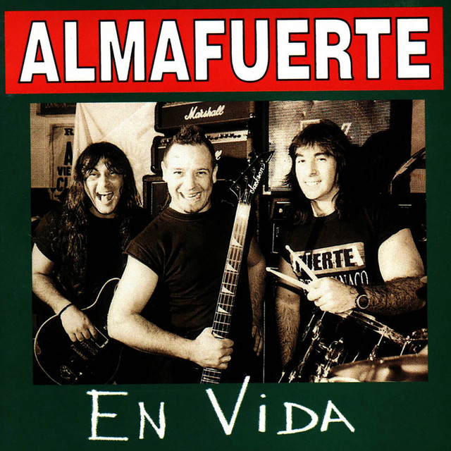

Fundador de las míticas bandas de heavy metal argetino o mejor dicho metal pesado: V8, Hermetica y Almafuerte, además de su etapa solista


V8 fue fundada en Buenos Aires a finales de 1979 por Ricardo Iorio y Ricardo "Chofa" Moreno, tras separarse de la banda "Comunión Humana", con la intención de crear un sonido más pesado y rápido. La banda, precursora del heavy metal argentino, tomó su nombre por sugerencia de un amigo, evocando potencia y velocidad.

Hermética fue una banda argentina de heavy metal/thrash metal fundamental, fundada en 1988 por el bajista y compositor Ricardo Iorio tras la disolución de V8. La agrupación surgió en un contexto de crisis social, convirtiéndose en un ícono del género en Hispanoamérica. La primera formación incluyó a Iorio, Antonio Romano (guitarra), Claudio O'Connor (voz) y Fabián Spataro (batería).

Almafuerte fue una banda de heavy metal argentina fundada el 29 de enero de 1995 en San Justo (Provincia de Buenos Aires) por Ricardo Iorio, tras la disolución de Hermética. La formación original incluyó a Iorio en voz y bajo, Claudio "Tano" Marciello en guitarra y Claudio Cardaci en batería.
De su etapa solista se nota un sonido menos metalero pero siempre siendo un sonido pesado, con letras directas y que dicen lo que siente. Se destaca el proyecto junto a Flavio Cianciarullo de los Fabulosos Cadillacs de nombre "Peso Argento", un albúm que busca un sonido mucho más folclórico donde rescata y toma sonidos más autoctonos de la Argentina tierra adentro.